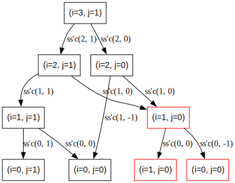
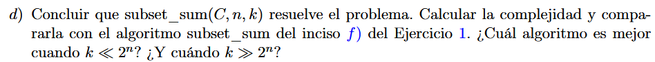
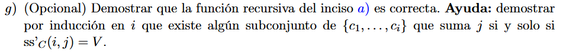

\(✓\)

Para \(C = \left\{ 1,1,1 \right\},n = |C|,k = 1\)


\(✓\)

1.f. es \(O\left( 2^{|C|} \right) = O\left( 2^{n} \right)\)
Luego, tenemos una matriz de tamaño \(n \cdot k\), entonces es de a lo sumo \(O(n \cdot k)\)
Si \(k \ll 2^{n} \Rightarrow O(n \cdot
k)\) es mejor \(\text{ss}'\)
b  \(✓\)
\(✓\)

memo = [0...k] en False
memo[0] = True
para c in C
para j in k...c
si memo[j-c] = True: memo[j] = True
ret memo[k]

Sea \(i \in \left\{ 0...n \right\},j \in \left\{ 0...k \right\}\)
\(P(i):\exists s \subseteq \left\{ c_{1},\ldots,c_{i} \right\}~|~\sum s = j \Longleftrightarrow \text{ ss'}_{C}(i,j) = V\)
\(P(0):\exists s \subseteq \left\{ c_{1},\ldots,c_{0} \right\}~|~\sum s = j \Longleftrightarrow \text{ ss'}_{C}(0,j) = V\)
\(( \Longrightarrow )\)
Hipótesis: \(\exists s \subseteq \left\{ c_{1},\ldots,c_{0} \right\}~|~\sum s = j \Longrightarrow s = \varnothing \land j = 0\)
Luego, \(\text{ss'}_{C}(0,j) = (j = 0)\underset{\text{Hipotesis }}{=}V\) \(✓\)
\(( \Longleftarrow )\)
Hipótesis: \(\text{ss'}_{C}(0,j) = V \Longrightarrow j = 0\)
Luego, \(\exists s \subseteq \left\{ c_{1},\ldots,c_{0} \right\}~|~\sum s = j \Longrightarrow s = \varnothing~|~\sum s = \sum\varnothing = j = 0\) \(✓\)
HI: \(P(i - 1):\exists s \subseteq \left\{ c_{1},\ldots,c_{i - 1} \right\}~|~\sum s = j \Longleftrightarrow \text{ ss'}_{C}(i - 1,j) = V\)
Queremos probar que \(\forall j::P(i - 1) \Rightarrow P(i)\)
\(\text{ss'}_{C}(i,j) = \text{ ss'}_{C}(i - 1,j)\underset{\text{HI }}{=}V\) \(✓\)
\[\begin{aligned} & \exists s \subseteq \left\{ c_{1},\ldots,c_{i - 1} \right\}~|~\sum s = j \land C\lbrack i\rbrack > j \Longrightarrow \\ & \exists s \subseteq \left\{ c_{1},\ldots,c_{i} \right\}~|~\sum s = j,C\lbrack i\rbrack \notin s \Longrightarrow \\ & \exists s \subseteq \left\{ c_{1},\ldots,c_{i} \right\}~|~\sum s = j \end{aligned}\] \(✓\)
Definición: \(\text{ss'}_{C}(i,j) = \text{ ss'}_{C}(i - 1,j) \vee \text{ ss'}_{C}\left( i - 1,j - C\lbrack i\rbrack \right)\)
Si \(\text{ss'}_{C}(i,j) = \text{ ss'}_{C}(i - 1,j) = V\):
Ya lo probamos antes \(✓\)
Si \(\text{ss'}_{C}(i,j) = \text{ ss'}_{C}\left( i - 1,j - C\lbrack i\rbrack \right) = V\):
\(C\lbrack i\rbrack \leq j \land_{\text{HI }}\exists s \subseteq \left\{ c_{1},\ldots,c_{i - 1} \right\}~|~\sum s = j \Longrightarrow 0 \leq j - C\lbrack i\rbrack \leq k\)
Alcanza con probar que
\(\exists s' \subseteq \left\{ c_{1},\ldots,c_{i - 1} \right\}~|~\sum s' = j - C\lbrack i\rbrack \Longrightarrow \exists s = s' \cup \left\{ c_{i} \right\} \subseteq \left\{ c_{1},\ldots,c_{i} \right\}~|~\sum s = j\)
Vemos que trivialmente \(s' \subseteq \left\{ c_{1},\ldots,c_{i - 1} \right\} \Rightarrow s = s' \cup \left\{ c_{i} \right\} \subseteq \left\{ c_{1},\ldots,c_{i} \right\}\)
Y \(\sum s' = j - C\lbrack i\rbrack \Rightarrow \sum s' \cup \left\{ c_{i} \right\} = j - C\lbrack i\rbrack + C\lbrack i\rbrack = j\) \(✓\)
\(\square\)